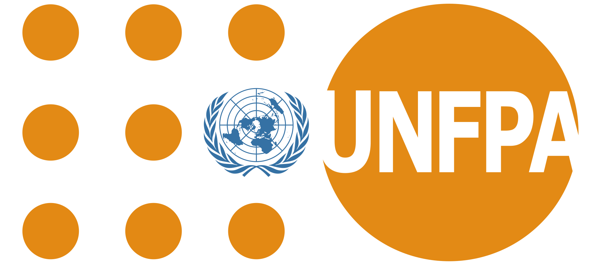

A hackathon launch that kicks off a focused 4-month build sprint — delivering working population intelligence tools integrated into country workflows.
The gap is not data. The gap is integration, validation, and usability.
Key indicators arrive too late for fast-moving risks. Population maps are years old. Mortality data lags 18 months. GBV baselines reflect the last survey.
Signals exist across EIOS, DIOS, WorldPop, Earth Observation, and PDI but are not operationally combined into a single decision layer that planners can use.
Country teams cannot verify or act on AI outputs. Signals arrive at too coarse a scale and without a structured review mechanism.
A session that aligns teams and launches a focused 4-month build sprint — delivering small, working population intelligence tools integrated into PDP+ and country workflows.
Align teams, define builds, assign roles. Live demos of EIOS and DIOS. Everyone leaves with a task and a team.
→Four months. Three tracks. Validated outputs against real country data. Small, working systems — not concepts.
→Three connected tools integrated into PDP+ and country workflows. Each track produces something immediately usable.
→Tracks are not independent. DIOS signals feed Tracks 1 and 2. PDI enriches both. All converge in PDP+ as one decision layer.
Choose the track that matches your expertise and interest. Every track delivers a working tool within four months.
Six organisations. One system from signals to validated action.

Leads programme design, owns PDP+ deployment, manages country pilot relationships and validation workflows.
Access Platform ↗Provides the EIOS real-time signal feed. Co-leads Track 3 DIOS expansion and country validation approach.
Access Platform ↗100m gridded population surfaces. Age-sex stratification. Denominates all risk layers and validates spatial accuracy.
Access Platform ↗330 directional PDI location embeddings explaining how communities relate to services, movement, and risk.
Access Platform ↗ArcGIS Online, Living Atlas, and Experience Builder. Delivers outputs to district planners in existing government environments.
Access Platform ↗Independent model validation, bias auditing, country analytics support, and AI fairness review across all three tracks.
Access Platform ↗The hackathon session kicks off a structured sprint. Here is the timeline.
Join the PopIntel Hack sprint. Select your track and commit to building population intelligence tools that matter.